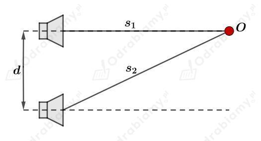

Długość fali wynosi:
Długość fali to odległość między sąsiednimi punktami znajdującymi się w tej samej fazie drgań - znajdującymi się w tym samym położeniu w danej chwili czasowej (np. dwa sąsiednie grzbiety fali są oddalone o długość fali).
a)
Punkt jest odległy od źródła fali o:
Sprawdzamy, czy odległość tego punktu od źródła fali jest równa całkowitej wielokrotności długości fali:
Odległość tego punktu od źródła fali jest równa całkowitej wielokrotności długości fali, więc punkt ten znajduje się w tej samej fazie drgań co punkt źródłowy.
Zmiany wysokości falującej wody w tym punkcie przedstawia wykres A.
b)
Punkt jest odległy od źródła fali o:
Sprawdzamy, czy odległość tego punktu od źródła fali jest równa całkowitej wielokrotności długości fali:
Odległość tego punktu od źródła fali nie jest równa całkowitej wielokrotności długości fali. Punkt ten znajduje się w przeciwnej fazie drgań niż punkt źródłowy.
Zmiany wysokości falującej wody w tym punkcie przedstawia wykres B.
c)
Punkt jest odległy od źródła fali o:
Sprawdzamy, czy odległość tego punktu od źródła fali jest równa całkowitej wielokrotności długości fali:
Odległość tego punktu od źródła fali jest równa całkowitej wielokrotności długości fali, więc punkt ten znajduje się w tej samej fazie drgań co punkt źródłowy.
Zmiany wysokości falującej wody w tym punkcie przedstawia wykres A.
d)
Punkt jest odległy od źródła fali o:
Sprawdzamy, czy odległość tego punktu od źródła fali jest równa całkowitej wielokrotności długości fali:
Odległość tego punktu od źródła fali jest równa całkowitej wielokrotności długości fali, więc punkt ten znajduje się w tej samej fazie drgań co punkt źródłowy.
Zmiany wysokości falującej wody w tym punkcie przedstawia wykres A.
e)
Punkt jest odległy od źródła fali o:
Sprawdzamy, czy odległość tego punktu od źródła fali jest równa całkowitej wielokrotności długości fali:
Odległość tego punktu od źródła fali nie jest równa całkowitej wielokrotności długości fali. Punkt ten znajduje się w przeciwnej fazie drgań niż punkt źródłowy.
Zmiany wysokości falującej wody w tym punkcie przedstawia wykres B.
W przypadku interferencji na szczelinie światło mogło interferować tylko w jednym kierunku stąd widoczne prążki (paski) interferencyjne. Płomień świecy daje światło rozchodzące się sferycznie w przestrzeni i światło to natrafia na wiele szczelin - drobnych oczek firanki. Efektem interferencji światła przechodzącego przez firankę są jasne plamki tworzące dwuwymiarowy wzór.
Rysunek pomocniczy do zadania:

Odległość między głośnikami wynosi:
Odległości obserwatora od głośników są równe:
Korzystając z twierdzenia Pitagorasa zapisujemy:
Różnica dróg przebytych przez falę dźwiękową będzie równa:
Warunek na wzmocnienie fali:
Stąd możliwe długości fali będą równe:
Podstawiamy za dowolne liczby naturalne:
Warunek na wygaszenie fali:
Stąd możliwe długości fali będą równe:
Podstawiamy za dowolne liczby naturalne:
Prędkość samochodu - źródła dźwięku:
Prędkość fali dźwiękowej w powietrzu:
Częstotliwość emitowanego dźwięku:
Korzystamy ze wzoru:
Wyznaczmy jaką zmianę częstotliwości dźwięku zauważy obserwator:
Obserwator, do którego zbliża się źródło dźwięku usłyszy dźwięk o zwiększonej częstotliwości :
Obserwator, od którego oddala się źródło dźwięku usłyszy dźwięk o zmniejszonej częstotliwości :
Długość fali:
Prędkość fali:
a)
Kajak dryfujący na wodzie będzie wykonywał drgania (ruchy w górę i w dół w swoim ustalonym położeniu) z częstotliwością równą częstotliwości przepływających fal.
Wyznaczmy częstotliwość rozchodzącej się fali na wodzie:
Częstotliwość z jaką fala unosi kajak jest równa 0,5 Hz.
b)
Kajak płynie w kierunku rozchodzenia się fali z prędkością:
Prędkości fali i kajaka odejmą się - kajak wykona jedno pełne drganie wolniej (gdyby kajak płynął z prędkością równą prędkości fali to mógłby utrzymywać się cały czas na jej grzbiecie):
Częstotliwość drgań kajaka będzie równa:
Częstotliwość z jaką fala unosi kajak jest równa 0,42 Hz.
c)
Kajak płynie w kierunku przeciwnym niż rozchodząca się fala z prędkością:
Prędkości fali i kajaka zsumują się - kajak wykona jedno pełne drganie szybciej:
Częstotliwość drgań kajaka będzie równa:
Częstotliwość z jaką fala unosi kajak jest równa 0,58 Hz.
Dane:
Prędkość rozchodzenia się fal elektromagnetycznych jest równa:
Szukane:
Rozwiązanie:
Rozpatrujemy zjawisko Dopplera w dwóch etapach. Najpierw mikrofale wysyłane przez nieruchomy radar docierają do poruszającego się odbiorcy - samochód.
Do samochodu dociera fala o zwiększonej częstotliwości.
Korzystamy ze wzoru:
Wyznaczmy zmianę częstotliwości fali:
Fale docierające do samochodu mają częstotliwość równą:
Następnie fale odbijają się od samochodu i wracają do radaru. Poruszający się samochód staje się źródłem fal, a radar nieruchomym obserwatorem.
Korzystamy ze wzoru:
Wyznaczmy zmianę częstotliwości fali:
Fale docierające do radaru mają częstotliwość równą:
Podstawmy do powyższego wzoru wyznaczone wcześniej zależności:
Zatem częstotliwość fali wracającej do radaru jest równa: